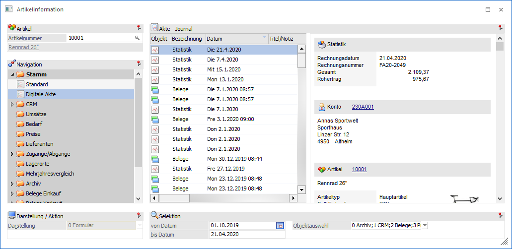
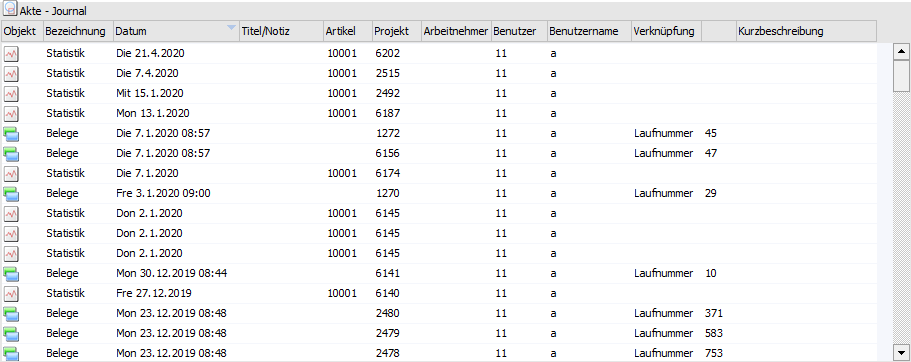
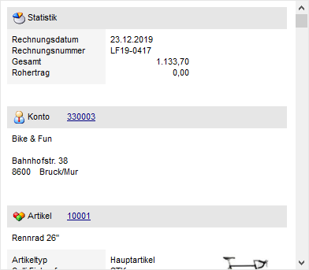
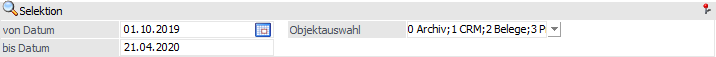

In der Ansicht "Digitale Akte" können die Bewegungsdaten des Artikels in Form einer Tabelle dargestellt werden. Bei Anwahl eines Datensatzes werden im rechten Teil des Fenster Detailinformationen angezeigt.

Die Ansicht "Digitale Akte" besteht aus den folgenden Info-Elementen:
ü Tabelle "Akte - Journal"
ü Detailinfo
ü Selektion
Tabelle "Akte - Journal"

In der Tabelle werden alle Objekt, gemäß der nachfolgenden Selektion, angezeigt.
Detailinfo

Abhängig vom markierten Objekt werden hier die entsprechenden Detailinformationen angezeigt.
Selektion

In diesem Bereich kann definiert werden, welche Einträge in der Tabelle dargestellt werden sollen. Die gewählten Einstellungen werden benutzerspezifisch gespeichert.
Ø Datum von /bis
An dieser Stelle kann definiert werden, welcher Zeitraum betrachtet / ausgewertet werden soll.
Ø Objektauswahl
Über diese Mehrfachauswahl können die Bewegungsdaten definiert werden, welche ausgewertet werden sollen. Folgende Objekte stehen hierfür zur Verfügung:
ü 0 - Archiv
ü 1 - CRM
ü 2 - Belege
ü 3 - Projekte
ü 4 - Statistik
Hinweis
Pro Objekt werden maximal 100 Datensätze angezeigt.